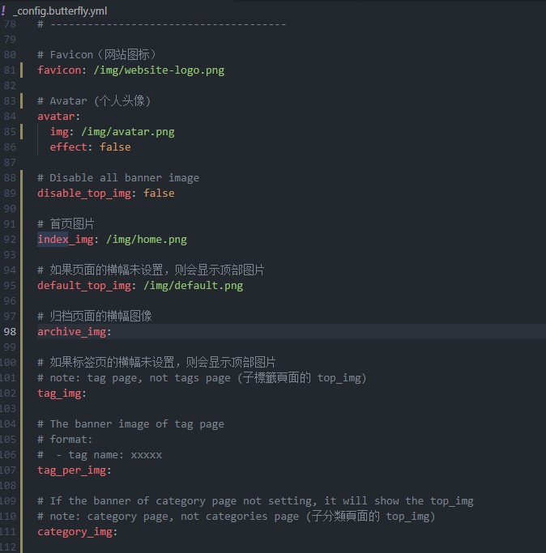
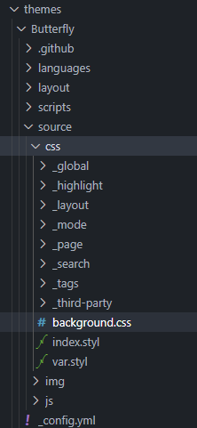
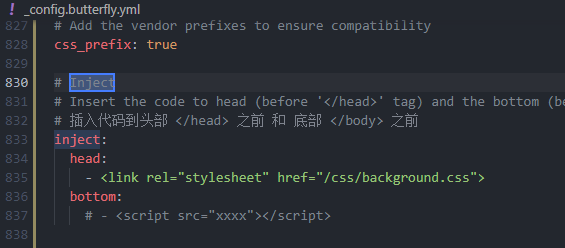
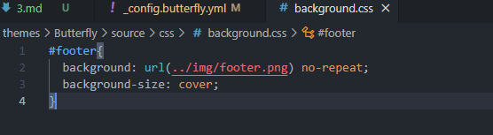

hexo主题配置及优化
一.安装主题
1.安装主题类型butterfly，在博客根目录下
1 | git clone -b master https://github.com/jerryc127/hexo-theme-butterfly.git themes/Butterfly |
2.在博客项目根目录_config.yml修改默认主题landscape
1 | theme: butterfly |
3.安装pug和stylus插件
1 | npm i hexo-renderer-pug hexo-renderer-stylus --save |
4.新建名一个_config.butterfly.yml文件，把_config.yml内容复制到其中
5.配置导航栏
1 | menu: |
6.进入_config.butterfly.yml文件，修改基本设置

二.butterfly主题样式修改
1.进入butterfly主题中css，新建一个background.css

2.进入_config.butterfly.yml文件，引入background.css

3.修改自己想修改的样式，如博客底部样式

本博客所有文章除特别声明外，均采用 CC BY-NC-SA 4.0 许可协议。转载请注明来自 一叶知秋！